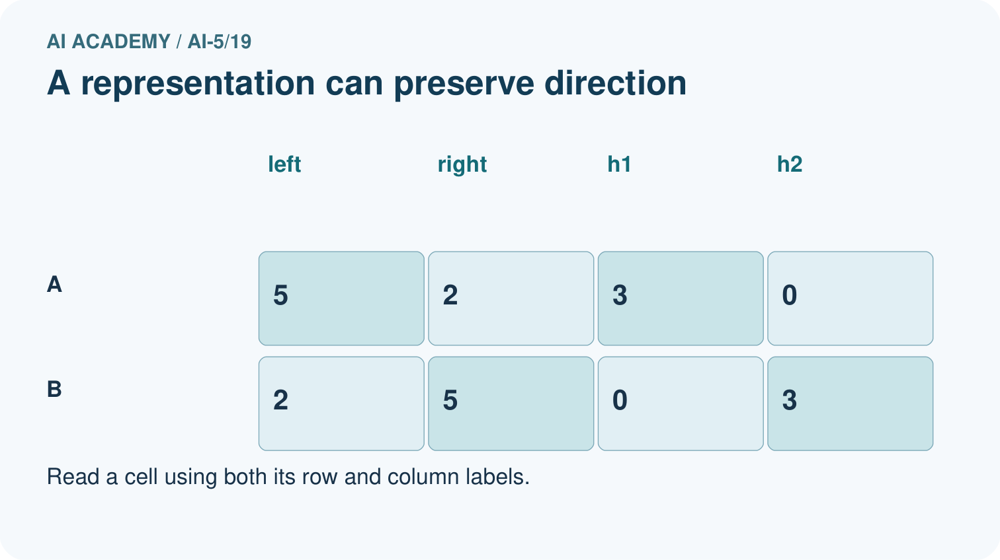
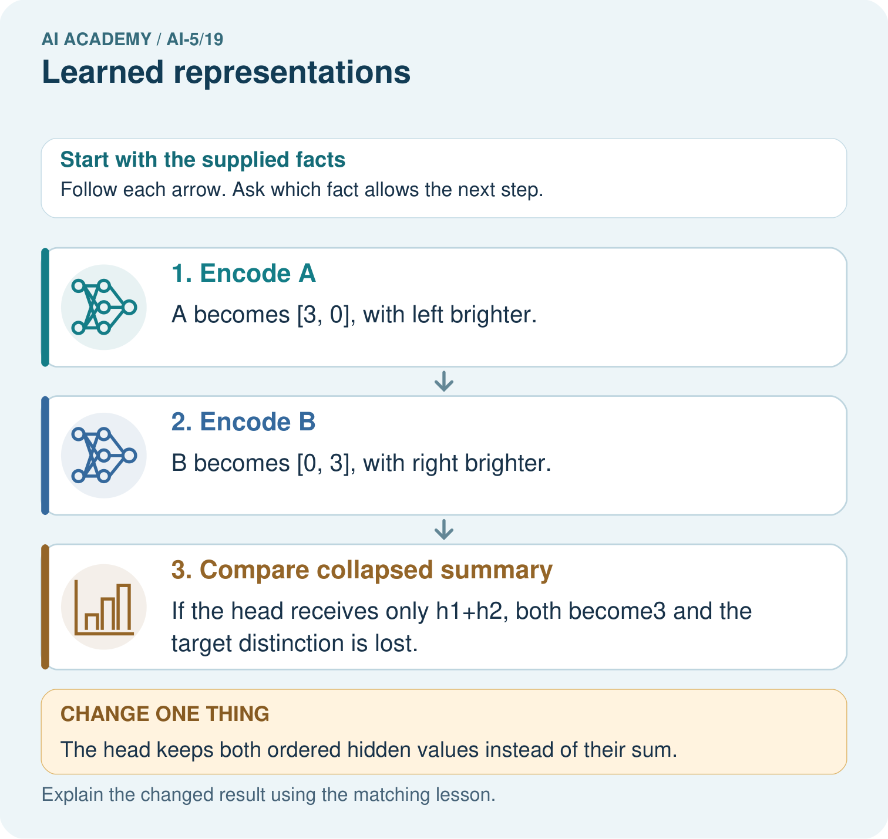

AI Academy · Level 5 · Grade 10 · Week 19 · Teacher guide
Learned representations
Learn to understand, design, build, test and explain AI systems responsibly.
Project: Image-pattern Network Investigation
Teacher guide · 1 of 6
Prepare the purpose, prerequisites and materials
Teach the learning cycle
Primary target: Trace an input through a hidden representation and a decision rule
| Session | Sequence and minutes | Resources |
|---|---|---|
| Session 1 · Understand · 45 min | 0–7: recall and prerequisite; 7–15: inspect the concrete case and predict; 15–30: teacher models the worked trace; 30–40: learners explain a step using the text and visual; 40–45: check the core idea. | Sections 1–6; record the brief recall in the workbook. |
| Session 2 · Practise · 45 min | 0–5: retrieve the procedure; 5–15: W2 completion practice; 15–23: explain and check with a partner; 23–30: each learner answers the misconception check; 30–40: targeted reteaching or a harder variation; 40–45: prepare the investigation. | Sections 7–10; use the matching workbook W2 and misconception check. |
| Session 3 · Investigate and transfer · 45 min | 0–5: retrieve the decision rule; 5–20: investigate or trace; 20–30: start the independent case; 30–38: connect the project; 38–43: act on feedback; 43–45: plan the return check. | Sections 9 and 11–14. Give extra time to finish the full task set; use Section 15 when the week includes a coding lab. |
This is a starting allocation of 135 minutes, not a validated duration. Preserve all named topics. Schedule extra time for connected examples, the full investigation, independent cases and project building. Repeated copies of a case share one recorded attempt; they are not new evidence.
Retrieval answer guidance
Debugging shapes and gradients
Without opening the old lesson, explain one key idea from Debugging shapes and gradients. Give an example and a mistake that the idea helps you avoid.
Look for: Check dimension contracts before computing a layer
Reference example, not the only acceptable wording: Teacher explanation: No. Each weight row must have the same length as x. Confirm the intended feature schema, then supply a valid two-feature input or deliberately redesign and retrain the layer; do not silently discard a value.
Regularisation and early stopping
Without opening the old lesson, explain one key idea from Regularisation and early stopping. Give an example and a mistake that the idea helps you avoid.
Look for: Separate a weight penalty from prediction error
Reference example, not the only acceptable wording: Teacher explanation: MSE 0, penalty 2, total J 2, total gradient 2. Zero data gradient does not remove the penalty gradient.
Batching and epochs
Without opening the old lesson, explain one key idea from Batching and epochs. Give an example and a mistake that the idea helps you avoid.
Look for: Distinguish an example a batch an update and an epoch
Reference example, not the only acceptable wording: Teacher explanation: Batch lengths 4, 4, 2; three updates per epoch, nine total updates and 30 example visits.
Use two 45-minute sessions. Begin with rectangle measurements and the explicit strict comparison. Distinguish the constructed layer from a genuinely fitted layer throughout. The key reasoning is the collision argument: identical representations force identical deterministic outputs. No calculus, external AI account or full training framework is required.
Outcomes
Trace an input through a hidden representation and a decision rule
Identify distinctions that a representation preserves or loses
Separate a useful constructed feature from evidence of successful learning
Preparation
Printed lesson and workbook; paper and pencil
Calculator and optional local Python 3 editor; no packages or AI accounts needed
Use the fictional examples supplied; prepare the fresh retry before class
Prerequisite answer
Different negative scores all become zero. Matching activations can hide an earlier error, so intermediate values need independent checks.
End goal for the pictorial case
By the end, I can explain learned representations using a traced example and a stated limitation.
This added worked case illustrates the week’s main idea. Retain all original and connected topics; schedule its practice within the teaching cycle.
Teacher guide · 2 of 6
Explain and model the mechanism
Consider fictional rectangles with input [width, height] in cm. The task is to identify rectangles whose width is strictly greater than height. The target is 1 for wider rectangles and 0 otherwise. A square therefore has target 0. This is an arithmetic teaching task, not a claim that a network is needed to measure rectangles.
Define two hidden units: h1 = ReLU(width - height) and h2 = ReLU(height - width). Their weight rows are [1, -1] and [-1, 1], with zero biases. The representation h = [h1, h2] records excess width or excess height. Predict 1 when h1 > 0; otherwise predict 0.
These weights were chosen by the lesson author. They demonstrate a representation that could be implemented by a network, but no training run has established that a model learned it. Learning would require adjusting parameters using training data and recording the procedure.
A prediction head is the computation that reads the hidden vector and produces an output. Keeping it separate lets us inspect what information is available before making a decision. This example assumes two finite, positive measurements in cm; it is not a general input validator.
The raw difference width - height can be recovered as h1 - h2. The original width and height cannot in general be recovered: many rectangles share a difference. Two hidden components do not guarantee preservation of two input components.
| Term | Meaning |
|---|---|
| Representation | An encoding of an example used by another computation |
| Hidden activation | A value produced inside a network after applying an activation function |
| Collision | Two different inputs receiving the same representation |
| Learned feature | A feature whose computation depends on parameters adjusted using training data |
Different rectangles can share a hidden vector
Guided: [6, 4] and [7, 5] both encode as [2, 0], predict 1 and have areas 24 and 35 square cm. A deterministic head using only h cannot recover both exact areas. Exit: hand-chosen weights are not evidence of learning, and correct comparison labels do not establish area prediction. Test the collision [4, 2] versus [5, 3], with areas 8 and 15.
Model the reasoning aloud
Use the complete worked example below before asking learners to complete W2. Reveal a small part, invite a prediction, then explain the deciding step. These teacher notes contain solutions; do not reveal the independent case answer during modelling.
Different rectangles can share a hidden vector
| Thinking move | Teacher prompt |
|---|---|
| Plan | What is given? What is the question? Which procedure fits these facts? |
| Do | Point to each input and intermediate step in the worked trace. Name the rule that allows the next step. |
| Check | Does the output answer the question? Which assumption or limitation prevents a larger claim? |
Use the diagram and verbal explanation together. Ask learners to match a sentence to a specific visual step; do not assign learners fixed visual or auditory learning styles.
A pictorial worked case: Learned representations
See when a representation preserves a distinction and when it destroys it.
The facts we will use
Toy input [left, right]; representation h=[ReLU(left-right), ReLU(right-left)]. A=[5, 2]; B=[2, 5]; target is left-brighter versus right-brighter.
All inputs and outcomes in this worked example are invented classroom data; no real model run is claimed.


Read the picture one step at a time
Why this result follows
A hidden representation decides which distinctions remain available to an output head. These two hidden coordinates preserve whether the left or right side is brighter. Adding them discards that direction and gives both examples the same scalar. A deterministic head cannot assign different labels to identical inputs; retain the distinction or change the task.
What this example does not establish
This is a hand-chosen representation, not evidence that a trained image model actually learned these units.
Change one thing in the pictured case
Change: The head keeps both ordered hidden values instead of their sum.
Prediction: It can distinguish [3, 0] from [0, 3] in this example.
Reason: The representation retains the direction of brightness difference when coordinates stay separate.
Ask while showing the picture
Cover the result. Ask learners to name the inputs and predict the next step. Uncover one step, connect the icon to the actual procedure, and explain its evidence. Then change the supplied condition and compare. The picture is a representation; it does not document execution of a real AI model.
Teacher guide · 3 of 6
Demonstrate and guide practice
| Time or stage | Teacher action |
|---|---|
| Session 1 start to 7 minutes | Retrieve how ReLU can hide distinctions and establish the rectangle schema and target. |
| 7 to 18 minutes | Trace the four lesson examples, including a square, before naming the hidden features. |
| 18 to 32 minutes | Complete W1 and trace the optional code, separating the representation from its head. |
| 32 to 45 minutes | Use the visual and W2 to explain why identical hidden inputs cannot yield two exact areas. |
| Session 2 start to 8 minutes | Complete the guided pair and compare the sum-only encoding using W3. |
| 8 to 20 minutes | Derive recovery from sum and difference, then discuss the limited conclusion in W5. |
| 20 to 35 minutes | Collect W4 independently, requiring both score vectors, hidden vectors and target labels. |
| 35 to 45 minutes | Use the exit response and fresh retry to distinguish learning evidence from an authored formula. |
Use the worked example in Sections 3 and 6. Collect a prediction before revealing its result; ask the learner to point to each intermediate fact.
Provide paper rectangles and columns for signed difference, two scores, activations and target. Allow calculators and ask for verbal collision explanations before algebra. Extension: show that adding the same positive amount to width and height preserves h while changing area; derive exact recovery when the sum is also retained.
Reduce help deliberately
Completion task: Give the hidden vectors and areas for [4, 2] and [5, 3]. Explain why increasing only the complexity of a deterministic area head cannot make both exact predictions correct.
Teacher check: Teacher explanation: Both hidden vectors are [2, 0], while areas are 8 and 15 square cm. Identical inputs to a deterministic head yield identical outputs, so the head cannot return both required values.
Start by identifying the given inputs together. Leave the intermediate steps blank. If needed, model one step, then withdraw that help on the next step. Move to a full trace only when the partial trace is understood. For partners, alternate explainer and checker; collect a response from every learner before discussion.
Individual reasoning check
Use the worked case for Learned representations. Proposed explanation: “Two hidden values preserve both input measurements”. Decide whether this explanation is supported. Point to the step or supplied fact that decides; explain your repair if needed.
Expected correction: Dimension alone does not guarantee recovery; distinct inputs can collide.
Collect explanations, not only yes/no votes. If a misunderstanding is common, re-model the relevant step for the class. If it affects a few learners, give a short targeted group explanation while others solve a more demanding variation.
Pictorial practice question
Why can no deterministic head using only the sum classify both correctly? Point to the relevant step in the picture, then write the changed result and the rule or evidence that supports it.
Reasoned teacher answer
Both examples supply the identical scalar3 but require different targets. Identical inputs cannot produce different deterministic outputs. Changed-case check: It can distinguish [3, 0] from [0, 3] in this example. The representation retains the direction of brightness difference when coordinates stay separate.
Changed-case reasoning: It can distinguish [3, 0] from [0, 3] in this example. The representation retains the direction of brightness difference when coordinates stay separate.
Collect each learner’s explanation before discussion. Use the first missing connection between input, deciding step and result to choose support. This question is worked-case practice, not fresh mastery evidence.
Teacher guide · 4 of 6
Run the investigation and diagnose misconceptions
Two hidden values preserve both input measurements: Dimension alone does not guarantee recovery; distinct inputs can collide.
A more complex head can always fix lost information: A deterministic head cannot distinguish identical representations without additional input.
Correct outputs prove human concepts were learned: The layer here was constructed, and a task score alone does not establish a hidden concept.
Use Section 9 for the evidence ledger. Add a boundary or missing-input case and record the expected response before checking. More successful repeats of one case do not establish wider coverage.
Match the support to the first error
| What the response shows | Next teaching action |
|---|---|
| Missing or misread facts | Read the case aloud, mark supplied versus unknown facts, and let the learner restate it. |
| Wrong procedure | Return to the deciding step in the worked case. Contrast it with the proposed incorrect explanation. |
| Arithmetic or implementation error | Trace intermediate values or lines; preserve the first mismatch and retry that step. |
| Correct result without a reason | Ask for a trace and a changed case before marking independent understanding. |
| An unsupported wider claim | Ask which supplied evidence supports the claim and which further observation would be needed. |
Offer an oral explanation, drawing, enlarged visual or fewer examples when that removes a reading/writing barrier. Keep the same reasoning goal. Stretch secure learners by changing a boundary or assumption and asking them to defend the effect, not simply by assigning more of the same questions.
Teacher guide · 5 of 6
Assess and explain the answers
Guided and exit questions
Guided: [6, 4] and [7, 5] both encode as [2, 0], predict 1 and have areas 24 and 35 square cm. A deterministic head using only h cannot recover both exact areas. Exit: hand-chosen weights are not evidence of learning, and correct comparison labels do not establish area prediction. Test the collision [4, 2] versus [5, 3], with areas 8 and 15.
W1 Trace new inputs
Encode [8, 3], [3, 8] and [4, 4] with the lesson layer. Apply its prediction rule and explain the square boundary.
Teacher explanation: The vectors are [5, 0], [0, 5] and [0, 0]. Predictions are 1, 0 and 0. Equal width and height does not satisfy strictly greater.
W2 Prove an information loss
Give the hidden vectors and areas for [4, 2] and [5, 3]. Explain why increasing only the complexity of a deterministic area head cannot make both exact predictions correct.
Teacher explanation: Both hidden vectors are [2, 0], while areas are 8 and 15 square cm. Identical inputs to a deterministic head yield identical outputs, so the head cannot return both required values.
W3 Compare another encoding
The alternative representation is s = width + height. Use [4, 2] and [2, 4] to decide whether s alone always supports the wider-than-height task.
Teacher explanation: Both have s = 6, but their targets are 1 and 0. This collision prevents any deterministic head using only s from getting both right.
W4 Audit a new representation independently
A different layer uses g = [ReLU(width - height - 1), ReLU(height - width - 1)]. Encode [4, 3] and [3, 4]. State their targets for width strictly greater than height. Can any deterministic head receiving only g classify both correctly?
Teacher explanation: Both encode as [0, 0]: the scores are [0, -2] and [-2, 0]. Targets are 1 and 0. No deterministic head receiving only this shared vector can distinguish the pair. The added threshold erased a distinction required by this task.
W5 Repair and qualify a claim
For h = [2, 0] and s = 8, recover width, height and area. Does this algebra prove that a training program learned the representation or that it will work well on noisy measurements?
Teacher explanation: Difference d is 2. Width is (8 + 2) / 2 = 5 and height is (8 - 2) / 2 = 3; area is 15 square cm. The algebra establishes recovery under the formula, not a training history or performance with noisy measurements.
Independent assessment and fresh retry
W4 requires scores [0, -2] and [-2, 0], hidden vector [0, 0] for both, targets 1 and 0 and an impossibility explanation. Fresh retry: use g = [ReLU(width - height - 2), ReLU(height - width - 2)] for [5, 3] and [3, 5]. Scores are [0, -4] and [-4, 0]; both hidden vectors are [0, 0], but targets are 1 and 0. No deterministic head using only g can classify both correctly.
Assess independent transfer
Selected case: A different layer uses g = [ReLU(width - height - 1), ReLU(height - width - 1)]. Encode [4, 3] and [3, 4]. State their targets for width strictly greater than height. Can any deterministic head receiving only g classify both correctly?
Selected case answer
Teacher explanation: Both encode as [0, 0]: the scores are [0, -2] and [-2, 0]. Targets are 1 and 0. No deterministic head receiving only this shared vector can distinguish the pair. The added threshold erased a distinction required by this task.
| Dimension | Evidence required |
|---|---|
| Explanation | Names the applicable idea or procedure and ties it to the supplied facts. |
| Trace and result | Preserves the given inputs and shows the relevant intermediate steps; distinguishes a prediction from an observed execution. |
| Limits | States the assumptions, missing evidence or conditions under which the result would change. |
Record each dimension as not yet, with support, or independent. Accept a valid alternative procedure with a defensible trace. Do not penalise an honestly recorded model failure if the learner correctly explains its evidence and limits.
Feedback that the learner uses
Name the earliest unsupported step and give one action to repair it. Have the learner make that repair now and explain why. Then assess the relevant skill on a fresh, fully specified case. Confirm it was not previously practised with feedback; solve and check the new case before assigning it. A follow-up design prompt is a starting brief, not automatically an equivalent test.
Teacher guide · 6 of 6
Connect the project, support and next lesson
Add a labelled learned representations evidence sheet to Image-pattern Network Investigation. Show how you can trace an input through a hidden representation and a decision rule. Use the supplied fictional case and keep its inputs, intermediate steps, calculation or prediction, and limitation. Connect this record to last week’s record; a matching answer without a trace is insufficient.
Provide paper rectangles and columns for signed difference, two scores, activations and target. Allow calculators and ask for verbal collision explanations before algebra. Extension: show that adding the same positive amount to width and height preserves h while changing area; derive exact recovery when the sum is also retained.
Week 20 introduces image tensors and channels, with explicit axis order and value scales.
Retain the project ledger and assess a changed case after support. Check the relevant prerequisite before carrying this component forward.
Plan the delayed return
Suggested return points in this level: ai-5/20, ai-5/22, ai-5/25. Use actual classroom dates, adjusting for holidays and gaps. One, three and six teaching weeks are scheduling choices, not a claimed optimal spacing.
At a delayed check, ask for the idea from memory and a changed application. Compare with the earlier independent response and record support used. For a new level, revisit the previous capstone before checking the new prerequisites.
| Record | Teacher evidence |
|---|---|
| Learner code and date | |
| Concept and case used; prior exposure | |
| Explanation / trace / limits | |
| Support and first repair | |
| Changed case and delayed outcome | |
| Next teaching action |
Use the evidence to choose reteaching or the next step. A completed page, confidence rating or attractive project does not by itself demonstrate understanding.
Project evidence from this case
For your Image-pattern Network Investigation, save the input, procedure, observed result and limitation of this check. Label this worked example as practice; use a different, previously unreviewed case when checking independent understanding.